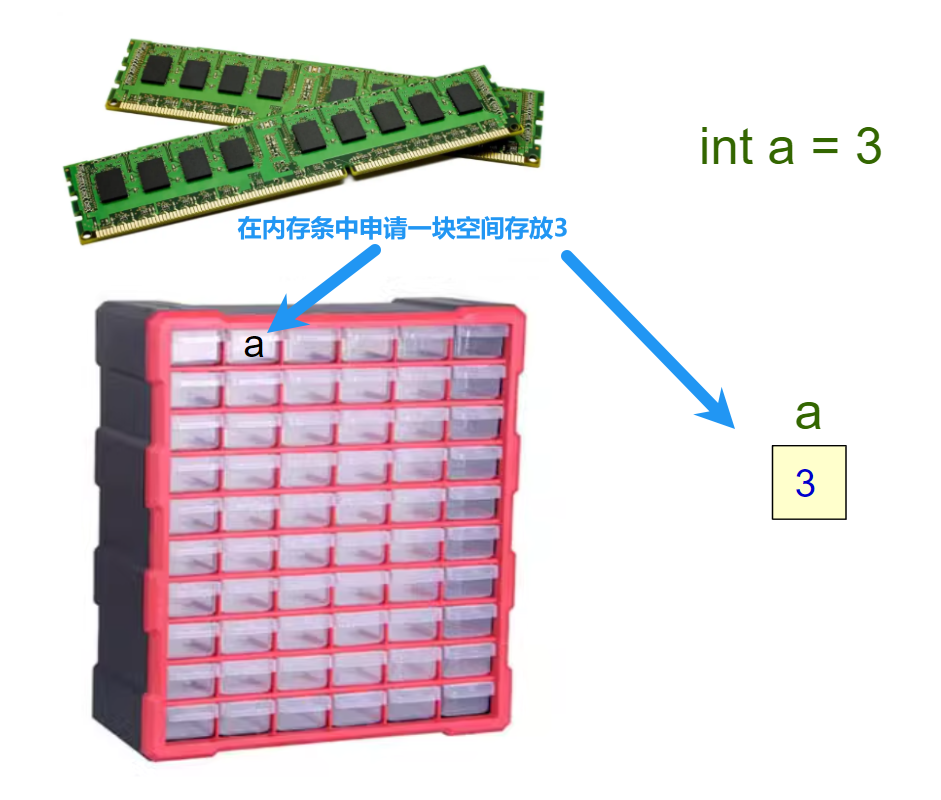
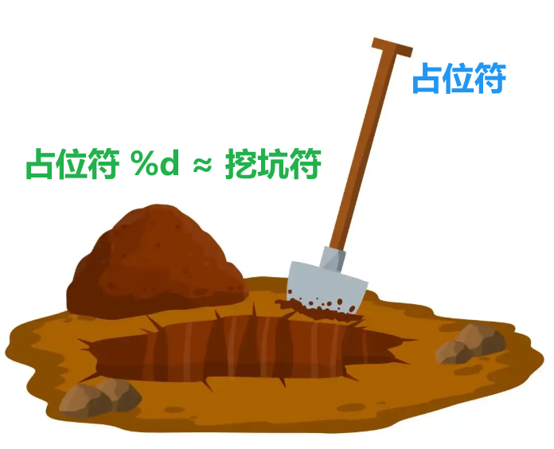

<!DOCTYPE lake>
<h1 data-lake-id="YdPEd" id="YdPEd"><span data-lake-id="u486e215a" id="u486e215a">0&gt; 功能需求</span></h1><p data-lake-id="u02bb57b9" id="u02bb57b9"><span class="lake-fontsize-12" data-lake-id="uff6385b2" id="uff6385b2" style="color: #000000">第1台电子计算机是为了计算导弹轨迹研发的，咱先用他计算不同正方形的周长</span></p><p data-lake-id="ua851a1a6" id="ua851a1a6"></p><hr/><h1 data-lake-id="iDfld" id="iDfld"><span data-lake-id="u62b19dc5" id="u62b19dc5" style="color: #000000">1&gt; 变量的引入</span></h1><h2 data-lake-id="CpJdj" id="CpJdj"><span data-lake-id="u0aea364d" id="u0aea364d">1.1&gt; 硬编码</span></h2><span class="yuque-card-unsupported">[codeblock]</span><p data-lake-id="u39970e17" id="u39970e17"><span data-lake-id="u7627eb0a" id="u7627eb0a">🐪</span><span data-lake-id="u2501d1f7" id="u2501d1f7">这样写太累，每次都需要手动修改数字（3 / 5 / 7）， 重复计算（4 * 边长）</span></p><hr/><h2 data-lake-id="AFu1z" id="AFu1z"><span data-lake-id="u1a912b4b" id="u1a912b4b">1.2&gt; 使用变量</span></h2><p data-lake-id="u01b19114" id="u01b19114"><span data-lake-id="ucb6e448e" id="ucb6e448e">我们可以像数学公式一样引入一个变量，再去修改变量，就方便多了</span></p><span class="yuque-card-unsupported">[codeblock]</span><p data-lake-id="u4bbcc3db" id="u4bbcc3db"><span data-lake-id="u3cbefea5" id="u3cbefea5">优化后，</span></p><p data-lake-id="u99f5bb7b" id="u99f5bb7b"><span data-lake-id="u8a785d5d" id="u8a785d5d">用变量a代替硬编码数字，使代码更易维护；</span></p><p data-lake-id="u378f9e2d" id="u378f9e2d"><span data-lake-id="ub2d6c613" id="ub2d6c613">4 * a只需写1次，逻辑更清晰！</span></p><hr/><span class="yuque-card-unsupported">[codeblock]</span><p data-lake-id="ue4048144" id="ue4048144"><span data-lake-id="u278be494" id="u278be494">计算与输出分离，逻辑更清晰；</span></p><hr/><h1 data-lake-id="FbAft" id="FbAft"><span data-lake-id="uc585be8a" id="uc585be8a">2&gt; 变量的定义</span></h1><h2 data-lake-id="FPq42" id="FPq42"><span data-lake-id="uec6cdd0f" id="uec6cdd0f">2.1&gt; 语法基础</span></h2><span class="yuque-card-unsupported">[codeblock]</span><p data-lake-id="u5bfa9882" id="u5bfa9882"><br/></p><h2 data-lake-id="xfQ3A" id="xfQ3A"><span data-lake-id="u94572ef3" id="u94572ef3">2.2&gt; 变量定义的过程</span></h2><p data-lake-id="u37e074b6" id="u37e074b6"><span data-lake-id="uf759ee3f" id="uf759ee3f">内存条相等于是个超大储物柜：</span></p><p data-lake-id="uf0ab196e" id="uf0ab196e"><span data-lake-id="u11bf5923" id="u11bf5923">int a; 	</span><span data-lake-id="u09568416" id="u09568416" style="color: #2F4BDA">// 在储物柜找个空盒子， 并挂上标签a；</span></p><p data-lake-id="u0a720a47" id="u0a720a47"><span data-lake-id="ubbb3a796" id="ubbb3a796">=3； 	</span><span data-lake-id="u4fefa61f" id="u4fefa61f" style="color: #2F4BDA">// 把数字3放进这个柜子；</span></p><p data-lake-id="u45bc0b21" id="u45bc0b21"><span data-lake-id="ue71b8b2d" id="ue71b8b2d">a = 5; 	</span><span data-lake-id="u8915bdb6" id="u8915bdb6" style="color: #2F4BDA">// 打开标签a的盒子，把3换成5；</span></p><p data-lake-id="u9294d119" id="u9294d119"><span data-lake-id="ue6d54418" id="ue6d54418">​</span><br/></p><p data-lake-id="ube16c69b" id="ube16c69b"></p><hr/><h1 data-lake-id="oZdXp" id="oZdXp"><span data-lake-id="u6b109f8e" id="u6b109f8e">3&gt; printf-占位符%d</span></h1><span class="yuque-card-unsupported">[codeblock]</span><table class="lake-table" data-lake-id="jfvHb" id="jfvHb" margin="true" style="width: 534px" width-mode="contain"><colgroup><col width="159"/><col width="375"/></colgroup><tbody><tr data-lake-id="uc8ca6d0b" id="uc8ca6d0b"><td data-lake-id="udcfa27d8" id="udcfa27d8"><p data-lake-id="u55ae3f05" id="u55ae3f05"><span data-lake-id="ua195e48b" id="ua195e48b">占位符</span></p></td><td data-lake-id="u80b11906" id="u80b11906"><p data-lake-id="u243b109d" id="u243b109d"><span data-lake-id="u53371f77" id="u53371f77">把</span><strong><span data-lake-id="u49cc2c52" id="u49cc2c52" style="color: #DF2A3F">逗号</span></strong><span data-lake-id="uaff561ed" id="uaff561ed">后的数字按顺序填到字符串中对应位置</span></p></td></tr><tr data-lake-id="ubba2cf95" id="ubba2cf95"><td data-lake-id="ud528c9c2" id="ud528c9c2"><p data-lake-id="u9bdfe41d" id="u9bdfe41d"><span data-lake-id="u72c519f4" id="u72c519f4">%d</span></p></td><td data-lake-id="uc15948f5" id="uc15948f5"><p data-lake-id="ud1320ee2" id="ud1320ee2"><strong><span data-lake-id="u45ca4bf0" id="u45ca4bf0" style="color: #DF2A3F">d</span></strong><span data-lake-id="u93590271" id="u93590271">ecimal（十进制整数）</span></p></td></tr></tbody></table><p data-lake-id="u23e75ffe" id="u23e75ffe"></p><ul list="ufc0b43d5"><li data-lake-id="ue3bb9306" fid="u13403f12" id="ue3bb9306"><code data-lake-id="u58b473d9" id="u58b473d9"><strong><span class="lake-fontsize-12" data-lake-id="u73e799bb" id="u73e799bb">%d</span></strong></code><span class="lake-fontsize-12" data-lake-id="u440126d6" id="u440126d6"> → 在字符串里"挖的坑"</span></li><li data-lake-id="ufd9949f3" fid="u13403f12" id="ufd9949f3"><code data-lake-id="u35825c16" id="u35825c16"><strong><span class="lake-fontsize-12" data-lake-id="u4eed91f1" id="u4eed91f1">a</span></strong></code><span class="lake-fontsize-12" data-lake-id="u561d3db6" id="u561d3db6"> → 准备填进坑里的"土"（数字）</span></li></ul><hr/><h1 data-lake-id="OJ2fm" id="OJ2fm"><span data-lake-id="u259ce054" id="u259ce054">🐻</span><span data-lake-id="u49a8b981" id="u49a8b981">实践练习：</span></h1><p data-lake-id="ua570426b" id="ua570426b"><span data-lake-id="u86a7b3f3" id="u86a7b3f3">1&gt; </span><span data-lake-id="ufdd04ccf" id="ufdd04ccf" style="color: #000000">计算矩形面积（长 * 宽）</span></p><span class="yuque-card-unsupported">[codeblock]</span><p data-lake-id="u842d52b0" id="u842d52b0"><span data-lake-id="ue5b66d01" id="ue5b66d01">​</span><br/></p><p data-lake-id="u047ecde6" id="u047ecde6"><span data-lake-id="u518a3b08" id="u518a3b08">2&gt; 实现2个数的交换：</span></p><span class="yuque-card-unsupported">[codeblock]</span><p data-lake-id="ue30c50a8" id="ue30c50a8"></p>